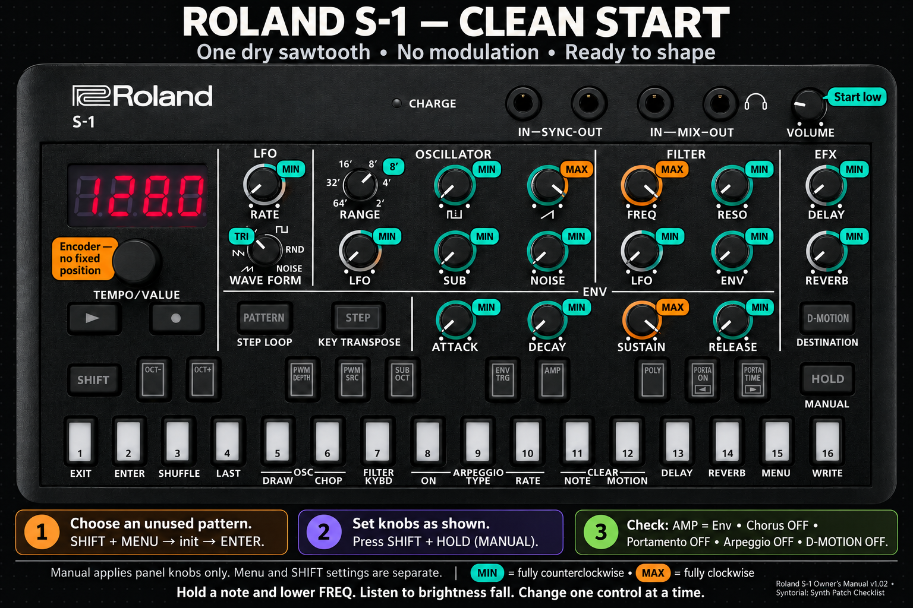
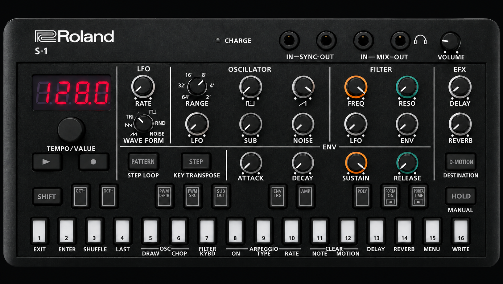

This course teaches you how the S-1 makes a sound. You do not need to know anything first. Each lesson is short. Each lesson builds on the one before it.
1. Turn your headphones down before you start. Some sounds get loud fast.
2. Change one thing at a time. Listen. Then change the next thing.
We say knob positions like a clock. 7 o'clock is all the way left. That is the lowest setting. We also call it MIN. 5 o'clock is all the way right. That is the highest setting. We call it MAX. 12 o'clock is straight up, the middle.
Knob names like Knob 1 or Fader 2 are the MiniLab 3 controls. The MiniLab must be on its "Roland S1 v2" program. The full map is in Lesson 11. You can do every lesson on the S-1 alone too.
You can pick an empty slot, wipe it clean, set the knobs to the clean start, save it, and never break a factory sound.
On the S-1 a sound and its notes live together. Roland calls that pair a pattern. Think of it as a slot.
There are 4 banks. Each bank has 16 slots. That is 64 slots. We write a slot as bank-number. So 2-05 means bank 2, slot 5.
| Bank | What is in it from the factory | What we use it for in this course |
|---|---|---|
| 1 (1-01 to 1-16) | Roland's 16 factory sounds. They can be overwritten. There is no lock. | Listen only. Never save here. |
| 2 (2-01 to 2-16) | Empty | Lesson slots. Lesson 03 saves to 2-03, Lesson 04 to 2-04, and so on. |
| 3 (3-01 to 3-16) | Empty | Your own sounds. Save the ones you like here. |
| 4 (4-01 to 4-16) | Empty | Scratch. Mess around here. It does not matter if you wreck it. Slot 4-15 is the one keeper: the clean start. |
You are in bank 1, you change the sound, and you press SHIFT + pad 16 (WRITE). That saves over Roland's sound. So: always check the display shows a 2, 3 or 4 first before you save.
If you do wreck one, the fix is a factory reset. Hold the HOLD pad while you turn the power on. The display shows FACt (factory reset). Press the blinking D-MOTION button. Wait for donE (done). Turn the S-1 off and on. This wipes all 64 slots, so back up first (see below).
The display shows the slot, like 2.03 (bank 2, slot 3). If a sound is playing, the new slot waits until the old one finishes.
"Init" is short for initialize. It means: erase this slot. The notes go away. The sound goes back to Roland's blank sound. Every hidden SHIFT setting goes back to normal too.
Init is not saved by itself. If you turn the S-1 off now, the old slot comes back. That is fine. We save at the end of each lesson.
The S-1 has a catch. The knobs can point one way while the sound is set another way. That happens every time you change slot. To make the sound match the knobs, hold SHIFT and press HOLD (MANUAL). We call this the clean start. Set the knobs like the picture first. Then press SHIFT + HOLD.

| Section | Knob | Set it to | Why |
|---|---|---|---|
| LFO | RATE | MIN | Slow. It is not doing anything yet anyway. |
| LFO | WAVE FORM | triangle (∧∨) | The smooth shape. Ready for Lesson 09. |
| OSCILLATOR | RANGE | 8′ | The middle octave. Not too low, not too high. |
| OSCILLATOR | LFO (white) | MIN | No pitch wobble. |
| OSCILLATOR | square, SUB, NOISE | MIN | Three of the four sound makers off. |
| OSCILLATOR | saw (⟋) | MAX | One sound maker on. The sawtooth is bright and easy to hear. |
| FILTER | FREQ | MAX | Filter wide open. You hear everything. |
| FILTER | RESO, ENV, LFO | MIN | No whistle, no movement. |
| EFX | DELAY, REVERB | MIN | No echo, no room. Dry. |
| ENV | ATTACK, DECAY, RELEASE | MIN | Note starts and stops right away. |
| ENV | SUSTAIN | MAX | Note stays at full volume while you hold the pad. |
SHIFT + HOLD only copies the knobs. The hidden SHIFT settings stay as init left them. Init sets them to these, and this is what we want:
| Hidden setting | How to see it | Should show |
|---|---|---|
| AMP | SHIFT + AMP pad | Env (envelope) |
| POLY | SHIFT + POLY pad | Nono (one note at a time) |
| PWM SRC | SHIFT + PWM SRC pad | NAn (manual) |
| FILTER KYBD | SHIFT + pad 7 | 0 |
| ARPEGGIO | SHIFT + pad 8 | OFF (off) |
If one is different, turn TEMPO/VALUE until it matches. Press pad 1 (EXIT).
Press any keyboard pad. The 13 big pads at the bottom are a one-octave keyboard. You should hear one plain, buzzy note. That is the clean start sound. Every lesson begins from here.
A small dot appears at the right of the display. When you turn the S-1 off, unsaved changes are gone. The slot goes back to the last save.
Hold SHIFT. Press pad 15 (MENU). Turn TEMPO/VALUE to rL.Sd (Reload Sound). Press pad 2 (ENTER). The sound goes back to the last save. The notes stay. rLod (reload sound and notes) puts back the sound and the notes.
Open the slot you want to copy. Hold SHIFT, press pad 15 (MENU). Turn to COPy (copy). Press ENTER. Turn TEMPO/VALUE to pick where it goes, like 3.01 (bank 3, slot 1). Press ENTER. Use this to move a lesson sound you like into bank 3.
Plug the S-1 into the Mac with the USB cable. Hold the PLAY button while you turn the power on. Wait 1 to 2 minutes. A drive called S-1 appears on the Mac. Copy the whole BACKUP folder somewhere safe. Eject the drive. Turn the S-1 off. Do this before a factory reset, and once a month.
The S-1 can record the notes you play. It keeps them in the slot with the sound. This is called a riff. You do not need this for the lessons. It is fun, and it helps you hear a sound many times without playing it again.
A count-in is four clicks before the recording starts. It gives you time to get ready.
The click is a steady beat. It helps you play in time.
Open the menu again. Turn to Ntr.L (metronome level). Press ENTER. Turn the number up. Press EXIT.
Wrong notes? Hold SHIFT. Press pad 15 (MENU). Turn to rL.Sq (reload sequence). Press ENTER. The notes are gone. The sound stays. Go back to Step 5. Too fast or too slow? Change TEMPO/VALUE and record again.
Save the clean start to slot 4-15. Now you can always come back to it.
Next: Lesson 01, the map →You can point to the five sections on the panel and say what each one does, in one short sentence.
A slot holds a sound and its notes. Bank 1 is Roland's. Banks 2, 3 and 4 are yours. Save with SHIFT + 16 → ENTER.
Open slot 4-15, your saved clean start. Press SHIFT + HOLD. If you did not save it, do Lesson 00 steps 1 to 3 again in slot 4-15.
A sound is made in steps. Each step is a section on the panel. The sound goes from left to right across the top row.

| Section | In plain words | Job |
|---|---|---|
| OSCILLATOR | the sound maker | Makes the raw buzz. Picks the octave. |
| FILTER | the bright-or-dark knob | Takes the fizz out of the buzz. Or leaves it in. |
| ENV (envelope) | the note shaper | Decides how a note starts, holds and ends. It does this once for every note. |
| LFO | the wobble maker | Rocks a setting back and forth, over and over, by itself. |
| EFX (effects) | the decoration | Adds echo and room sound at the very end. |
AMP is short for amplifier. It is the volume gate. It opens when you press a pad and closes when you let go. The S-1 has no AMP section with knobs. It is one hidden setting. Hold SHIFT and press the AMP pad to see it. Env means the envelope controls the volume. GAtE means plain on and off. We keep it on Env.
Many S-1 settings have no knob. To reach them, hold SHIFT and press a pad. Or hold SHIFT and turn a knob. The small words above each pad tell you its SHIFT job. The display shows the value. Turn TEMPO/VALUE to change it. Press pad 1 (EXIT) to leave.
Nothing changed. You put every knob back. No save needed. The next lesson still starts from the clean start.
Next: Lesson 02, what sound is →You can name the three things about a sound wave that change what you hear.
Five sections. The sound goes OSCILLATOR → FILTER → AMP → EFX. ENV and LFO are helpers.
Open slot 4-15, the clean start. Press SHIFT + HOLD.
Sound is air wiggling back and forth. Fast wiggles sound high. Big wiggles sound loud.
A speaker pushes air back and forth. Your ear feels those pushes. There is a third thing too: the shape of the wiggle. Shape is why a flute and a trumpet sound different on the same note. The word for shape-of-sound is timbre. Say it "TAM-ber". You can also just say "the colour of the sound".
Nothing to save. Set the octave back to 0: hold SHIFT and press OCT− and OCT+ at the same time.
Next: Lesson 03, the oscillator →You can hear the difference between the saw and the square, and you can add a deep SUB under them.
The OSCILLATOR makes the raw buzz. A sound has speed, size and shape. Shape is called timbre.
Open slot 2-03. Do MENU → init (initialize) → ENTER. Set every knob like the table. Press SHIFT + HOLD.
| Knob | Set to |
|---|---|
| saw | MAX |
| square, SUB, NOISE | MIN |
| RANGE | 8′ |
| OSC LFO | MIN |
| FREQ | MAX |
| RESO, FILTER ENV, FILTER LFO | MIN |
| ATTACK, DECAY, RELEASE | MIN |
| SUSTAIN | MAX |
| LFO RATE | MIN |
| LFO WAVE FORM | triangle |
| DELAY, REVERB | MIN |
| SHIFT settings | AMP = Env · POLY = Nono · PWM SRC = NAn |
The S-1 has four sound makers. Each green knob is the volume of one of them. You mix them like paint.
| Green knob | Sound maker | Sounds like | Good for |
|---|---|---|---|
| ⊓⊔ (square) | Square wave | hollow, like a clarinet | bleepy leads, dark bass |
| ⟋ (saw) | Sawtooth wave | buzzy, bright, full | bass, stabs, big leads |
| SUB | Sub oscillator | a deep copy, one or two octaves down | heavy bass floor |
| NOISE | Noise | hiss, like wind or rain | hi-hats, air, risers |
The square wave has a secret. Its top and bottom can be the same width, or different widths. A thin top sounds nasal and reedy. Hold SHIFT and press PWM DEPTH to set the width, 0 to 255. Hold SHIFT and press PWM SRC to pick what moves the width. NAn means you set it and it stays. LFO (LFO wave) makes it shimmer. Env (envelope) moves it once per note. PWM is short for "pulse width modulation". That just means "changing the width".
Two more knobs live in this section. RANGE picks the octave. 64′ is very low. 2′ is very high. 8′ is the middle. The white LFO knob lets the wobble bend the pitch. That is Lesson 09. Leave it at MIN for now.
Leave the knobs like this: saw MAX, SUB 12 o'clock (SUB OCT = -1oc), square and NOISE MIN, RANGE 8′. Everything else as the table at the top. Save to slot 2-03: SHIFT + 16 → ENTER → donE (done). This is your "saw plus sub" sound. Lesson 04 starts from it.
Next: Lesson 04, the filter →You can make a sound dark or bright with one knob, and you can guess the sound before you turn it.
Four sound makers: square, saw, SUB, NOISE. Each green knob is one volume. RANGE picks the octave.
Open slot 2-04. Do MENU → init (initialize) → ENTER. Set every knob like the table. Press SHIFT + HOLD. Then set SUB OCT: SHIFT + SUB OCT pad → -1oc (one octave down).
| Knob | Set to |
|---|---|
| saw | MAX |
| SUB | 12 o'clock |
| square, NOISE | MIN |
| RANGE | 8′ |
| OSC LFO | MIN |
| FREQ | MAX |
| RESO, FILTER ENV, FILTER LFO | MIN |
| ATTACK, DECAY, RELEASE | MIN |
| SUSTAIN | MAX |
| LFO RATE | MIN |
| LFO WAVE FORM | triangle |
| DELAY, REVERB | MIN |
| SHIFT settings | AMP = Env · POLY = Nono · PWM SRC = NAn · SUB OCT = -1oc |
The filter is a gate. It lets the low parts of the sound through. It blocks the high, fizzy parts.
A sawtooth is not one sound. It is a stack of quiet tones piled up. The stack is called the harmonics. The S-1 filter is a low-pass filter. That means it lets the low harmonics pass through. The knob that moves the gate is called FREQ. Turn it down and the high harmonics go away. The sound gets dark, like music through a wall. Turn it all the way down and there is no sound at all.
Leave FREQ at 12 o'clock. Everything else as the table. Save to slot 2-04: SHIFT + 16 → ENTER → donE (done).
Next: Lesson 05, resonance →You can make the filter "talk" with the RESO knob, and you know why it gets loud.
The filter is a gate. FREQ moves the gate. Low FREQ is dark. High FREQ is bright. A sound is a stack of harmonics.
Open slot 2-05. Do MENU → init (initialize) → ENTER. Set every knob like the table. Press SHIFT + HOLD. Set SUB OCT to -1oc (one octave down). Turn your headphones down first.
| Knob | Set to |
|---|---|
| saw | MAX |
| SUB | 12 o'clock |
| square, NOISE | MIN |
| RANGE | 8′ |
| OSC LFO | MIN |
| FREQ | 12 o'clock |
| RESO, FILTER ENV, FILTER LFO | MIN |
| ATTACK, DECAY, RELEASE | MIN |
| SUSTAIN | MAX |
| LFO RATE | MIN |
| LFO WAVE FORM | triangle |
| DELAY, REVERB | MIN |
| SHIFT settings | AMP = Env · POLY = Nono · PWM SRC = NAn · SUB OCT = -1oc |
Resonance makes the edge of the filter louder. You hear a "wow" or a whistle right where the gate is.
Go back to the picture in Lesson 04. Drag RESO up. See the bump at the edge of the purple line? That bump turns up the harmonics right at the gate. Push RESO all the way up and the filter sings by itself. That is called self-oscillation. It means the filter has become its own sound maker.
Leave FREQ at 10 o'clock, RESO at 2 o'clock. Everything else as the table. Save to slot 2-05: SHIFT + 16 → ENTER → donE (done).
Next: Lesson 06, the envelope →You can make a pluck, an organ, a slow pad and a click, using only the four ENV knobs.
FREQ moves the filter gate. RESO makes the edge of the gate loud. ENV is a helper. It makes no sound by itself.
Open slot 2-06. Do MENU → init (initialize) → ENTER. Set every knob like the table. Press SHIFT + HOLD. Set SUB OCT to -1oc (one octave down). Check SHIFT + AMP shows Env (envelope).
| Knob | Set to |
|---|---|
| saw | MAX |
| SUB | 12 o'clock |
| square, NOISE | MIN |
| RANGE | 8′ |
| OSC LFO | MIN |
| FREQ | 10 o'clock |
| RESO | 2 o'clock |
| FILTER ENV, FILTER LFO | MIN |
| ATTACK, DECAY, RELEASE | MIN |
| SUSTAIN | MAX |
| LFO RATE | MIN |
| LFO WAVE FORM | triangle |
| DELAY, REVERB | MIN |
| SHIFT settings | AMP = Env · POLY = Nono · PWM SRC = NAn · SUB OCT = -1oc |
The envelope is a robot hand. Every time you press a pad, it turns the volume knob for you. It moves in four steps: A, D, S, R.
| Step | Question it answers | S-1 knob | MiniLab |
|---|---|---|---|
| Attack | How fast does the note get going? | ATTACK | Knob 5 |
| Decay | How fast does it drop after the start? | DECAY | Knob 6 |
| Sustain | How loud does it stay while I hold the pad? (This is a level, not a time.) | SUSTAIN | Knob 7 |
| Release | How long does it ring after I let go? | RELEASE | Knob 8 |
| Shape | ATTACK | DECAY | SUSTAIN | RELEASE |
|---|---|---|---|---|
| Pluck / bass | MIN | 10 o'clock | MIN | 9 o'clock |
| Organ / stab | MIN | MIN | MAX | MIN |
| Pad (slow swell) | 1 o'clock | 2 o'clock | 3 o'clock | 3 o'clock |
| Click / hat | MIN | 8 o'clock | MIN | MIN |
One S-1 catch: the envelope only shapes the volume if AMP is set to listen to it. Hold SHIFT and press AMP. Env means "follow the envelope". GAtE means "just on while the pad is down". Keep it on Env.
Leave the Pluck shape: ATTACK MIN, DECAY 10 o'clock, SUSTAIN MIN, RELEASE 9 o'clock. Everything else as the table. Save to slot 2-06: SHIFT + 16 → ENTER → donE (done).
Next: Lesson 07, envelope moves the filter →You can make the classic techno bass: every note opens bright and closes dark.
The envelope is a robot hand. A, D, S, R. It shapes the volume when AMP = Env. Pluck means ATTACK MIN, SUSTAIN MIN.
Open slot 2-07. Do MENU → init (initialize) → ENTER. Set every knob like the table. Press SHIFT + HOLD. Set SUB OCT to -1oc (one octave down).
| Knob | Set to |
|---|---|
| saw | MAX |
| SUB | 12 o'clock |
| square, NOISE | MIN |
| RANGE | 8′ |
| OSC LFO | MIN |
| FREQ | 10 o'clock |
| RESO | 2 o'clock |
| FILTER ENV, FILTER LFO | MIN |
| ATTACK | MIN |
| DECAY | 10 o'clock |
| SUSTAIN | MIN |
| RELEASE | 9 o'clock |
| LFO RATE | MIN |
| LFO WAVE FORM | triangle |
| DELAY, REVERB | MIN |
| SHIFT settings | AMP = Env · POLY = Nono · PWM SRC = NAn · SUB OCT = -1oc |
The robot hand can turn two knobs at once. It already turns the volume. Now we let it turn FREQ too.
This is the most important trick in the course. The orange ENV knob in the FILTER section (Knob 3) connects the envelope to the filter. Turn it up. Now every note starts bright and goes dark, "bow-w". The DECAY knob sets how fast it goes dark.
Leave FREQ 9 o'clock, RESO 2 o'clock, FILTER ENV 3 o'clock, DECAY 10 o'clock. Everything else as the table. Save to slot 2-07. This is your pluck bass. You will use it again in Lessons 10 and 11.
Next: Lesson 08, filter keyboard follow →You can make high notes and low notes sound equally bright, with one hidden setting.
FILTER ENV lets the envelope push the filter open on each note. FREQ is where the filter rests. DECAY is how fast the bite fades.
Open slot 2-08. Do MENU → init (initialize) → ENTER. Set every knob like the table. Press SHIFT + HOLD. Set SUB OCT to -1oc (one octave down).
| Knob | Set to |
|---|---|
| saw | MAX |
| SUB | 12 o'clock |
| square, NOISE | MIN |
| RANGE | 8′ |
| OSC LFO | MIN |
| FREQ | 9 o'clock |
| RESO | 2 o'clock |
| FILTER ENV | 3 o'clock |
| FILTER LFO | MIN |
| ATTACK | MIN |
| DECAY | 10 o'clock |
| SUSTAIN | MIN |
| RELEASE | 9 o'clock |
| LFO RATE | MIN |
| LFO WAVE FORM | triangle |
| DELAY, REVERB | MIN |
| SHIFT settings | AMP = Env · POLY = Nono · PWM SRC = NAn · SUB OCT = -1oc · FILTER KYBD = 0 |
High notes have high harmonics. A fixed filter cuts them more. Keyboard follow lifts the filter as you play higher, so every note is equally bright.
This one has no knob. Hold SHIFT and press pad 7 (FILTER KYBD). Turn TEMPO/VALUE from 0 to 255. Or hold SHIFT and turn the FILTER ENV knob. Both do the same thing. At 255 the filter follows the pitch exactly.
Leave FILTER KYBD = 200 and every knob as the table. Save to slot 2-08.
Next: Lesson 09, the LFO →You can make a sound wobble in pitch or in brightness, and you can tell which one you are hearing.
The envelope moves things once per note. FILTER KYBD lifts the filter for high notes. The LFO is the other helper.
Open slot 2-09. Do MENU → init (initialize) → ENTER. Set every knob like the table. Press SHIFT + HOLD. Set SUB OCT to -1oc (one octave down). This time the envelope is a slow pad, so the wobble has time to show.
| Knob | Set to |
|---|---|
| saw | MAX |
| SUB | 12 o'clock |
| square, NOISE | MIN |
| RANGE | 8′ |
| OSC LFO | MIN |
| FREQ | 11 o'clock |
| RESO | 10 o'clock |
| FILTER ENV | MIN |
| FILTER LFO | MIN |
| ATTACK | 12 o'clock |
| DECAY | 12 o'clock |
| SUSTAIN | MAX |
| RELEASE | 2 o'clock |
| LFO RATE | 9 o'clock |
| LFO WAVE FORM | triangle |
| DELAY, REVERB | MIN |
| SHIFT settings | AMP = Env · POLY = Nono · PWM SRC = NAn · SUB OCT = -1oc · FILTER KYBD = 0 |
The LFO is a slow wave that rocks a knob back and forth, forever. You pick what it rocks, how fast, and how much.
LFO is short for "low frequency oscillator". That means "a very slow wave". Too slow to hear as a note. Just right for rocking a knob. The envelope moves once per note. The LFO never stops. It rocks like a swing.
The LFO section has two knobs. RATE is the speed (Fader 1). WAVE FORM is the shape of the rocking: ramp up, ramp down, triangle, square, random (RND), or noise. The "how much" knobs live on the targets. The white LFO knob in OSCILLATOR rocks the pitch. The white LFO knob in FILTER rocks the brightness (Knob 4).
| Target knob | What you hear | Name for it |
|---|---|---|
| OSCILLATOR · LFO | the note bends up and down | vibrato |
| FILTER · LFO (Knob 4) | "wah-wah" or "wub-wub" | filter wobble |
| SHIFT + PWM SRC = LFO | the square wave shimmers | PWM |
Set the menu item LFO.S (LFO Sync) to On. Then RATE picks note lengths instead of a speed, and the wobble locks to the tempo.
In techno a tiny wobble is almost always better than a big one.
Leave FILTER LFO 9 o'clock, OSC LFO MIN, RATE 9 o'clock, WAVE FORM triangle, and the pad envelope. Save to slot 2-09. This is your breathing pad.
Next: Lesson 10, effects, voices and arp →You can add echo and room, play chords, and turn a chord into a running pattern.
The LFO rocks a knob over and over. Its amount knobs live on the targets: OSC LFO for pitch, FILTER LFO for brightness.
Open slot 2-10. Do MENU → init (initialize) → ENTER. Set every knob like the table. Press SHIFT + HOLD. Set SUB OCT to -1oc (one octave down). This is the pluck bass from Lesson 07 again.
| Knob | Set to |
|---|---|
| saw | MAX |
| SUB | 12 o'clock |
| square, NOISE | MIN |
| RANGE | 8′ |
| OSC LFO | MIN |
| FREQ | 9 o'clock |
| RESO | 2 o'clock |
| FILTER ENV | 3 o'clock |
| FILTER LFO | MIN |
| ATTACK | MIN |
| DECAY | 10 o'clock |
| SUSTAIN | MIN |
| RELEASE | 9 o'clock |
| LFO RATE | MIN |
| LFO WAVE FORM | triangle |
| DELAY, REVERB | MIN |
| SHIFT settings | AMP = Env · POLY = Nono · PWM SRC = NAn · SUB OCT = -1oc · FILTER KYBD = 0 · ARPEGGIO = OFF |
These come last. They decorate a sound you already built. Build the sound first. Decorate after.
Hold SHIFT and press the POLY pad. Turn TEMPO/VALUE. Nono is mono: one note at a time. Uni is unison: all four voices stacked on one note, very fat. PoLy (poly, many notes) plays up to four notes at once. Chd (chord) plays a whole chord from one pad.
An arpeggio is a chord played one note at a time, up or down, in rhythm. The arpeggiator does it for you. Hold a chord and it runs. SHIFT + pad 8 turns it on. SHIFT + pad 9 picks the direction. SHIFT + pad 10 picks the speed. It needs POLY set to PoLy.
Leave DELAY 11 o'clock, REVERB 10 o'clock, POLY = PoLy, ARPEGGIO = On, RATE 1_16. Save to slot 2-10. This is your arp pluck.
Next: Lesson 11, recipes and your MiniLab map →You can build five classic sounds from a recipe card, and you can take a factory sound apart by ear.
Build first, decorate after. POLY picks how many notes. The arpeggiator needs PoLy and a running clock.
Open slot 2-11. Do MENU → init (initialize) → ENTER. Set the clean start from Lesson 00. Press SHIFT + HOLD. Each recipe below starts from the clean start. Only the listed knobs change.
Recipes teach your ears. Then you break the rules on purpose.
Knob positions are clock times. 7 is MIN. 5 is MAX. They are starting points, so trust your ears over the numbers. Everything not listed stays at the clean start.
| Sound | Mix | FREQ | RESO | F.ENV | A / D / S / R | LFO | Extra |
|---|---|---|---|---|---|---|---|
| Rolling bass | saw MAX + SUB 12 | 9 | 11 | 3 | 7 / 10 / 7 / 9 | off | RANGE 16′ |
| Acid squelch | saw MAX | 9 | 3 | 4 | 7 / 11 / 8 / 8 | off | ride FREQ live |
| Chord stab | saw MAX + square 12 | 12 | 10 | 2 | 7 / 10 / 7 / 11 | off | POLY = Chd, menu Cho = 1 |
| Dark pad | square MAX, PWM SRC = LFO | 10 | 9 | 9 | 1 / 2 / 3 / 3 | FILTER LFO 9, RATE 9 | REVERB 1 o'clock |
| Arp lead | saw MAX | 1 | 1 | 12 | 7 / 11 / 10 / 9 | OSC LFO 8 | POLY = PoLy, ARPEGGIO On, 1_16 |
| MiniLab | S-1 knob | Lesson | MiniLab | S-1 knob | Lesson |
|---|---|---|---|---|---|
| Knob 1 | FILTER · FREQ | 04 | Knob 5 | ENV · ATTACK | 06 |
| Knob 2 | FILTER · RESO | 05 | Knob 6 | ENV · DECAY | 06 |
| Knob 3 | FILTER · ENV | 07 | Knob 7 | ENV · SUSTAIN | 06 |
| Knob 4 | FILTER · LFO | 09 | Knob 8 | ENV · RELEASE | 06 |
| Fader 1 | LFO · RATE | 09 | Fader 3 | OSC · NOISE | 03 |
| Fader 2 | OSC · SUB | 03 | Fader 4 | EFX · DELAY | 10 |
The MiniLab must send on MIDI channel 3. MIDI (Musical Instrument Digital Interface) is the language the keyboard uses to talk to the S-1. Channel 3 is the S-1's channel from the factory. The menu item is CH (MIDI channel).
| If you want it… | Go to |
|---|---|
| darker / brighter | FREQ (Knob 1) |
| squelchy, talking | RESO (Knob 2) + FILTER ENV (Knob 3) |
| punchy, short | ATTACK MIN, DECAY low, SUSTAIN MIN |
| soft, swelling | ATTACK up, RELEASE up |
| fatter, heavier | SUB (Fader 2), RANGE 16′, POLY = Uni |
| hollow | square knob up, saw down |
| moving, alive | FILTER LFO (Knob 4), PWM SRC = LFO |
| wide, shiny | Cho (menu), REVERB |
You understand the S-1. Lesson 12 shows how to write a riff into a slot by hand. The Menu Map after it is your reference for every hidden setting. Keep bank 4 for messing around. Back up to the Mac once a month.
Next: Lesson 12, the four-beat riff →You can copy a sound you like into a spare slot, clear only its notes, step in four notes from the MiniLab, fix a wrong note, loop it, and save it.
A slot holds a sound and its notes. COPy moves a slot. CLEAR NOTE wipes the notes only. init wipes both. Save with SHIFT + 16 → ENTER.
Pick the bank you keep your sounds in (bank 3 in this course). Open the slot with the sound you want, here slot 16. Press PLAY if it is playing, so it stops. MiniLab on its "Roland S1 v2" program.
A riff is four notes that loop. You do not need to play in time. You put each note on a step by hand.
| Step | Buttons | What happens |
|---|---|---|
| 1 · Copy slot 16 to 14 | Open slot 16 · SHIFT + pad 15 (MENU) · turn to COPy (copy) · pad 2 (ENTER) · turn to 14 · pad 2 (ENTER) | Slot 14 now has the same sound as 16. |
| 2 · Open 14 and save a safety copy | Hold PATTERN, press the bank pad, let go, press pad 14 · SHIFT + pad 16 (WRITE) · Ptn (pattern) · pad 2 (ENTER) | Wait for donE (done). If anything goes wrong later, rL.Sd brings this back. |
| 3 · Clear the notes only | SHIFT + pad 11 (CLEAR NOTE) · pad 2 (ENTER) | The notes are gone. The sound stays. Never use init (initialize) here. It wipes the sound too. |
| 4 · Set one bar | SHIFT + pad 4 (LAST) · turn to 16 · pad 1 (EXIT) | 16 steps is one bar of four beats. The beats are steps 1, 5, 9 and 13. |
| 5 · Enter the four notes | REC dark · STEP lit · hold pad 1, play a key on the MiniLab · repeat on pads 5, 9, 13 | Each pad lights when it holds a note. Press a lit pad again to delete its note. |
| 6 · Fix a wrong note | Hold the step pad · the display shows n.C5 (note C5); press D-MOTION if it shows something else · keep holding, turn TEMPO/VALUE to the note you want | Do this once per wrong step. |
| 7 · Loop, play over it, save | PLAY · play the MiniLab over the loop · SHIFT + pad 16 (WRITE) · Ptn · pad 2 (ENTER) | Check donE before you turn the S-1 off. |
The D one octave below C5 is D4. If the note sounds an octave off from what you want, pick D3 instead. The same rule works for any note: the number is the octave.
Slot 14 in your sounds bank holds the riff and its sound. To run it under a T-8 drum beat, see the T-8 course, Lesson 11.
Next: the Menu Map →